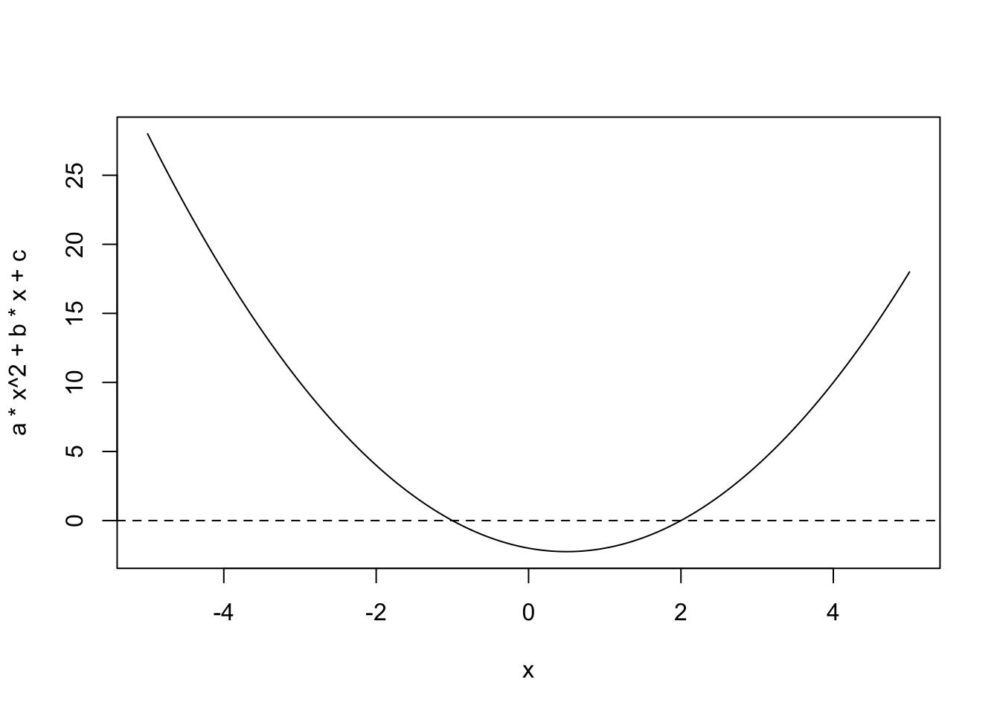

library(dslabs)Midterm1_Exercises
1 Quarto
- to not show code:
- execute:
- echo: false
Exercises
a <- 1
b <- -1
c <- -2
quad_formula <- function(a, b, c){
det_value <- (b^2) - (4*a*c)
if (det_value < 0){
print("No real solutions")
}
else if (det_value == 0){
sol_1 <- (-b)/(2*a)
paste0("There is one solution: ", sol_1)
}
else{
sol_2 <- (-b + sqrt(b^2 - 4*a*c))/(2*a)
sol_3 <- (-b - sqrt(b^2 - 4*a*c))/(2*a)
cat("The two solutions are: (", sol_2, ", ", sol_3, ")", "\n")
}
}
quad_formula(a, b, c)The two solutions are: ( 2 , -1 ) a <- 1
b <- -1
c <- -2
x <- seq(-5, 5, length = 300)
plot(x, a*x^2 + b*x + c, type = "l")
abline(h = 0, lty = 2)
Unix
- echo “Hello world” : prints Hello world
- pwd : see current working directory
- getwd() : current working directory in R
- echo $HOME : full path to home directory
- ls : listing directory content
- mkdir and rmdir : make and remove a directory
- cd : navigating directories
- mv : moving files
- cp : copying files
- rm : removing files - PERMANENT
- less : looking at a file (type 2 to exit the viewer)
- nano : edit a file
- man : getting help
- ls –help : getting help
- ls *.html : wildcard - print all files ending in html
- ls file-???.html : wildcard
Exercises
- mkdir unix_exercises
- mkdir data rdas code docs
- cd rdas curl https://raw.githubusercontent.com/rafalab/dslabs/master/inst/ extdata/murders.csv > murders.csv
- nano code-1.R filename <- “rdas/murders.csv” dat <- read.csv(filename)
- nano code-2.R echo “load(‘../rdas/murders/rda’)” > code-2.R
- ls *.R
- mv code/code-1.R code/import.R
Git and Github
- why use git and github: sharing, collaborating, version control
- github https link
- git init
- git remote add origin
- git status filename
- git add filename or .
- git commit -m “comment”
- git push
- git push - u origin main (upstream)
- git fetch
- git merge
- git pull
- git checkout filename : pull down a specific file from remote repo
- git clone
R Basics
- install.packages(“packagename”)
- help system: ?name or help(“name”)
ls(a)[1] "a" "b" "c" "has_annotations"
[5] "quad_formula" "x" - ls : see if a variable in in environment
- rm : remove variable
rm(a)- str : give information about an object
- typeof : basic data type of the object
- class : class attribute of an object
library(dslabs)
typeof(murders)[1] "list"class(murders)[1] "data.frame"str(murders)'data.frame': 51 obs. of 5 variables:
$ state : chr "Alabama" "Alaska" "Arizona" "Arkansas" ...
$ abb : chr "AL" "AK" "AZ" "AR" ...
$ region : Factor w/ 4 levels "Northeast","South",..: 2 4 4 2 4 4 1 2 2 2 ...
$ population: num 4779736 710231 6392017 2915918 37253956 ...
$ total : num 135 19 232 93 1257 ...- Dataframes:
- rows = observations, columns = variables
- add columns:
murders$pop_rank <- rank(murders$population)- use $ to access columns
- also use [row, columns]:
murders[1:5,] state abb region population total pop_rank
1 Alabama AL South 4779736 135 29
2 Alaska AK West 710231 19 5
3 Arizona AZ West 6392017 232 36
4 Arkansas AR South 2915918 93 20
5 California CA West 37253956 1257 51murders[1:5, 1:2] state abb
1 Alabama AL
2 Alaska AK
3 Arizona AZ
4 Arkansas AR
5 California CAmurders[1:5, c("state", "abb")] state abb
1 Alabama AL
2 Alaska AK
3 Arizona AZ
4 Arkansas AR
5 California CA- With